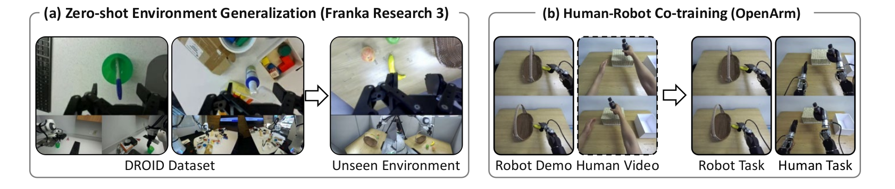

Real-world experiments

(a) Zero-shot environment generalization: train on DROID and evaluate in a new real-world environment on a Franka Research 3 without task-specific fine-tuning. (b) Human-robot co-training: train an OpenArm humanoid on robot demonstrations, optionally jointly with egocentric human videos, and evaluate on in-domain robot tasks and human-to-robot skill-transfer tasks.
Zero-shot environment generalization (DROID → new environment)
We evaluate four task suites with 12 trials each: in-domain easy tasks, an in-domain long-horizon task, out-of-domain tasks whose action verbs are absent from DROID, and object-grounding tasks with distractors of similar color or shape. FRED outperforms all one-step WAM baselines at the 5B scale, and at the 14B scale it outperforms DreamZero (a multi-step video-generating WAM on the same backbone) as well as the VLAs $\pi_{0.5}$ and GR00T N1.7, with the largest margins on long-horizon and out-of-domain tasks.
| Method | Backbone | In-domain easy | In-domain long-horizon | Out-of-domain | Object grounding |
|---|---|---|---|---|---|
| $\pi_{0.5}$ | – | 58.3 | 53.3 | 16.7 | 16.7 |
| GR00T N1.7 | – | 41.7 | 60.0 | 18.8 | 22.9 |
| Fast-WAM | Wan2.2-5B | 26.4 | 26.7 | 2.1 | 10.4 |
| DiT4DiT | Wan2.2-5B | 16.7 | 16.7 | 0.0 | 8.3 |
| AGRA | Wan2.2-5B | 41.7 | 31.7 | 10.4 | 33.3 |
| FRED (Ours) | Wan2.2-5B | 47.2 | 46.7 | 37.5 | 37.5 |
| DreamZero | Wan2.1-14B | 63.9 | 61.7 | 10.4 | 39.6 |
| FRED (Ours) | Wan2.1-14B | 79.2 | 81.7 | 52.1 | 54.2 |
Average task progress rate (%) for the long-horizon task and average success rate (%) otherwise. All policies are trained on DROID only.

DROID evaluation tasks: (a) in-domain easy, (b) in-domain long-horizon, (c) out-of-domain, and (d) object grounding.
Human-robot co-training (OpenArm humanoid)
Because video and action are separate modules, a WAM can be trained on human videos through the video objective alone, without action labels. We collect 553 robot demonstrations and 1,187 egocentric human videos on the OpenArm humanoid, and compare policies trained on robot data alone with those co-trained on robot and human data. FRED gives the best in-domain performance in both settings, and is the only WAM that reliably transfers skills demonstrated only in human videos: 50.0% task success and 97.2% instruction following, compared with 19.4% and 55.6% for the best competing WAM.
(a) In-domain robot tasks
| Method | Atomic | Composite | ||
|---|---|---|---|---|
| w/o human | w/ human | w/o human | w/ human | |
| $\pi_{0.5}$ | 66.7 | – | 50.0 | – |
| GR00T N1.7 | 91.7 | – | 45.8 | – |
| DreamZero | 68.1 | 68.1 | 0.0 | 0.0 |
| Fast-WAM | 56.9 | 65.3 | 0.0 | 0.0 |
| DiT4DiT | 77.8 | 86.1 | 50.0 | 41.7 |
| AGRA | 81.9 | 75.0 | 8.3 | 12.5 |
| FRED (Ours) | 91.7 | 97.2 | 70.8 | 75.0 |
Success rate (%) on atomic tasks; task progress (%) on the composite task.
(b) Human skill transfer tasks
| Method | Task success | Instruction following | ||
|---|---|---|---|---|
| w/o human | w/ human | w/o human | w/ human | |
| $\pi_{0.5}$ | 0.0 | – | 16.7 | – |
| GR00T N1.7 | 5.6 | – | 33.3 | – |
| DreamZero | 0.0 | 0.0 | 0.0 | 13.9 |
| Fast-WAM | 0.0 | 0.0 | 0.0 | 11.1 |
| DiT4DiT | 0.0 | 19.4 | 0.0 | 55.6 |
| AGRA | 0.0 | 0.0 | 0.0 | 0.0 |
| FRED (Ours) | 0.0 | 50.0 | 0.0 | 97.2 |
Tasks demonstrated only in human videos; without human data every model is at ~0.

OpenArm evaluation tasks: (a) in-domain atomic, (b) in-domain composite (an unseen combination of two trained skills), and (c) human skill transfer (never demonstrated by the robot).